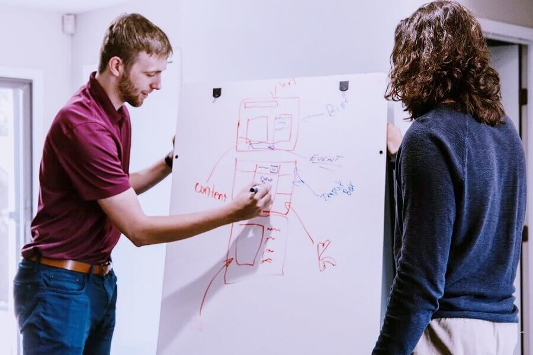

Single Page Website Theme
Our Features

We Help Set Priorities Correctly
Strategic Priorities are worths specifically related to an outside, consumer, and market focus. They can be revealed by understanding what the organization requires to focus on and focus on in order to achieve its company objectives.
We Take Into Account All Factors
If you're presenting in the meeting, however not hosting, and also need additional help such as a tip, particular projector or sound, make sure the conference setting you'll be at has the needed tools prepared.

We Use The Best Tools
Strategic Elements are those things that your company or busi- ness system needs to get right in order to do well with your key stakeholders, that is, your customers, owners and any various other company,individual that you rely on for success.

Analyze Your Competitors
This section covers the necessary and also the most preferred service method tools made use of by companies to implement their tactical plans and also achieve a sustained competitive advantage. improve your strategy with Single Page Website Theme.